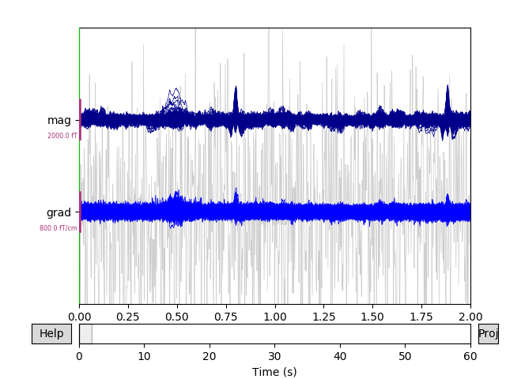

Note
Click here to download the full example code
Signal-space separation (SSS) and Maxwell filtering¶
This tutorial covers reducing environmental noise and compensating for head movement with SSS and Maxwell filtering.
Page contents
As usual we’ll start by importing the modules we need, loading some example data, and cropping it to save on memory:
import os
import mne
sample_data_folder = mne.datasets.sample.data_path()
sample_data_raw_file = os.path.join(sample_data_folder, 'MEG', 'sample',
'sample_audvis_raw.fif')
raw = mne.io.read_raw_fif(sample_data_raw_file, verbose=False)
raw.crop(tmax=60)
Background on SSS and Maxwell filtering¶
Signal-space separation (SSS) 12 is a technique based on the physics of electromagnetic fields. SSS separates the measured signal into components attributable to sources inside the measurement volume of the sensor array (the internal components), and components attributable to sources outside the measurement volume (the external components). The internal and external components are linearly independent, so it is possible to simply discard the external components to reduce environmental noise. Maxwell filtering is a related procedure that omits the higher-order components of the internal subspace, which are dominated by sensor noise. Typically, Maxwell filtering and SSS are performed together (in MNE-Python they are implemented together in a single function).
Like SSP, SSS is a form of projection. Whereas SSP empirically determines a noise subspace based on data (empty-room recordings, EOG or ECG activity, etc) and projects the measurements onto a subspace orthogonal to the noise, SSS mathematically constructs the external and internal subspaces from spherical harmonics and reconstructs the sensor signals using only the internal subspace (i.e., does an oblique projection).
Warning
Maxwell filtering was originally developed for Elekta Neuromag® systems,
and should be considered experimental for non-Neuromag data. See the
Notes section of the maxwell_filter() docstring
for details.
The MNE-Python implementation of SSS / Maxwell filtering currently provides the following features:
Basic bad channel detection (
find_bad_channels_maxwell())Bad channel reconstruction
Cross-talk cancellation
Fine calibration correction
tSSS
Coordinate frame translation
Regularization of internal components using information theory
Raw movement compensation (using head positions estimated by MaxFilter)
cHPI subtraction (see
mne.chpi.filter_chpi())Handling of 3D (in addition to 1D) fine calibration files
Epoch-based movement compensation as described in 1 through
mne.epochs.average_movements()Experimental processing of data from (un-compensated) non-Elekta systems
Using SSS and Maxwell filtering in MNE-Python¶
For optimal use of SSS with data from Elekta Neuromag® systems, you should provide the path to the fine calibration file (which encodes site-specific information about sensor orientation and calibration) as well as a crosstalk compensation file (which reduces interference between Elekta’s co-located magnetometer and paired gradiometer sensor units).
fine_cal_file = os.path.join(sample_data_folder, 'SSS', 'sss_cal_mgh.dat')
crosstalk_file = os.path.join(sample_data_folder, 'SSS', 'ct_sparse_mgh.fif')
Before we perform SSS we’ll look for bad channels — MEG 2443 is quite
noisy.
Warning
It is critical to mark bad channels in raw.info['bads'] before
calling maxwell_filter() in order to prevent
bad channel noise from spreading.
Let’s see if we can automatically detect it. To do this we need to
operate on a signal without line noise or cHPI signals, which is most
easily achieved using mne.chpi.filter_chpi(),
mne.io.Raw.notch_filter(), or mne.io.Raw.filter(). For simplicity
we just low-pass filter these data:
raw.info['bads'] = []
raw_check = raw.copy().pick_types(exclude=()).load_data().filter(None, 40)
auto_noisy_chs, auto_flat_chs = mne.preprocessing.find_bad_channels_maxwell(
raw_check, cross_talk=crosstalk_file, calibration=fine_cal_file,
verbose=True)
print(auto_noisy_chs) # we should find them!
print(auto_flat_chs) # none for this dataset
raw.info['bads'].extend(auto_noisy_chs + auto_flat_chs)
Out:
Scanning for bad channels in 12 intervals (5.0 sec) ...
No bad MEG channels
Processing 204 gradiometers and 102 magnetometers
Using fine calibration sss_cal_mgh.dat
Adjusting non-orthogonal EX and EY
Adjusted coil positions by (μ ± σ): 0.5° ± 0.4° (max: 2.1°)
Automatic origin fit: head of radius 91.0 mm
Using origin -4.1, 16.0, 51.7 mm in the head frame
Using 87/95 harmonic components for 0.000 (72/80 in, 15/15 out)
Using 87/95 harmonic components for 0.000 (72/80 in, 15/15 out)
Using 87/95 harmonic components for 0.000 (72/80 in, 15/15 out)
Using 87/95 harmonic components for 0.000 (72/80 in, 15/15 out)
Using 87/95 harmonic components for 0.000 (72/80 in, 15/15 out)
Using 87/95 harmonic components for 0.000 (72/80 in, 15/15 out)
Using 87/95 harmonic components for 0.000 (72/80 in, 15/15 out)
Using 87/95 harmonic components for 0.000 (72/80 in, 15/15 out)
Using 87/95 harmonic components for 0.000 (72/80 in, 15/15 out)
Using 87/95 harmonic components for 0.000 (72/80 in, 15/15 out)
Using 87/95 harmonic components for 0.000 (72/80 in, 15/15 out)
Using 87/95 harmonic components for 0.000 (72/80 in, 15/15 out)
Using 87/95 harmonic components for 0.000 (72/80 in, 15/15 out)
Using 87/95 harmonic components for 0.000 (72/80 in, 15/15 out)
Using 87/95 harmonic components for 0.000 (72/80 in, 15/15 out)
Using 87/95 harmonic components for 0.000 (72/80 in, 15/15 out)
Using 87/95 harmonic components for 0.000 (72/80 in, 15/15 out)
Using 87/95 harmonic components for 0.000 (72/80 in, 15/15 out)
Using 87/95 harmonic components for 0.000 (72/80 in, 15/15 out)
Using 87/95 harmonic components for 0.000 (72/80 in, 15/15 out)
Using 87/95 harmonic components for 0.000 (72/80 in, 15/15 out)
Using 87/95 harmonic components for 0.000 (72/80 in, 15/15 out)
Using 87/95 harmonic components for 0.000 (72/80 in, 15/15 out)
Using 87/95 harmonic components for 0.000 (72/80 in, 15/15 out)
Using 87/95 harmonic components for 0.000 (72/80 in, 15/15 out)
Using 87/95 harmonic components for 0.000 (72/80 in, 15/15 out)
Using 87/95 harmonic components for 0.000 (72/80 in, 15/15 out)
Using 87/95 harmonic components for 0.000 (72/80 in, 15/15 out)
Static bad channels: ['MEG 2443']
Static flat channels: []
[done]
['MEG 2443']
[]
But this algorithm is not perfect. For example, it misses MEG 2313,
which has some flux jumps, because there are not enough flux jumps in the
recording. So it can still be useful to manually inspect and mark bad
channels:
raw.info['bads'] += ['MEG 2313'] # from manual inspection
After that, performing SSS and Maxwell filtering is done with a
single call to maxwell_filter(), with the crosstalk
and fine calibration filenames provided (if available):
raw_sss = mne.preprocessing.maxwell_filter(
raw, cross_talk=crosstalk_file, calibration=fine_cal_file, verbose=True)
Out:
Maxwell filtering raw data
Bad MEG channels being reconstructed: ['MEG 2443', 'MEG 2313']
Processing 204 gradiometers and 102 magnetometers
Using fine calibration sss_cal_mgh.dat
Adjusting non-orthogonal EX and EY
Adjusted coil positions by (μ ± σ): 0.5° ± 0.4° (max: 2.1°)
Automatic origin fit: head of radius 91.0 mm
Using origin -4.1, 16.0, 51.7 mm in the head frame
Using 87/95 harmonic components for 0.000 (72/80 in, 15/15 out)
Loading raw data from disk
Processing 6 data chunks
[done]
To see the effect, we can plot the data before and after SSS / Maxwell filtering.
raw.pick(['meg']).plot(duration=2, butterfly=True)
raw_sss.pick(['meg']).plot(duration=2, butterfly=True)
- 

Notice that channels marked as “bad” have been effectively repaired by SSS, eliminating the need to perform interpolation. The heartbeat artifact has also been substantially reduced.
The maxwell_filter() function has parameters
int_order and ext_order for setting the order of the spherical
harmonic expansion of the interior and exterior components; the default
values are appropriate for most use cases. Additional parameters include
coord_frame and origin for controlling the coordinate frame (“head”
or “meg”) and the origin of the sphere; the defaults are appropriate for most
studies that include digitization of the scalp surface / electrodes. See the
documentation of maxwell_filter() for details.
Spatiotemporal SSS (tSSS)¶
An assumption of SSS is that the measurement volume (the spherical shell where the sensors are physically located) is free of electromagnetic sources. The thickness of this source-free measurement shell should be 4-8 cm for SSS to perform optimally. In practice, there may be sources falling within that measurement volume; these can often be mitigated by using Spatiotemporal Signal Space Separation (tSSS) 2. tSSS works by looking for temporal correlation between components of the internal and external subspaces, and projecting out any components that are common to the internal and external subspaces. The projection is done in an analogous way to SSP, except that the noise vector is computed across time points instead of across sensors.
To use tSSS in MNE-Python, pass a time (in seconds) to the parameter
st_duration of maxwell_filter(). This will
determine the “chunk duration” over which to compute the temporal projection.
The chunk duration effectively acts as a high-pass filter with a cutoff
frequency of \(\frac{1}{\mathtt{st\_duration}}~\mathrm{Hz}\); this
effective high-pass has an important consequence:
In general, larger values of
st_durationare better (provided that your computer has sufficient memory) because larger values ofst_durationwill have a smaller effect on the signal.
If the chunk duration does not evenly divide your data length, the final (shorter) chunk will be added to the prior chunk before filtering, leading to slightly different effective filtering for the combined chunk (the effective cutoff frequency differing at most by a factor of 2). If you need to ensure identical processing of all analyzed chunks, either:
choose a chunk duration that evenly divides your data length (only recommended if analyzing a single subject or run), or
include at least
2 * st_durationof post-experiment recording time at the end of theRawobject, so that the data you intend to further analyze is guaranteed not to be in the final or penultimate chunks.
Additional parameters affecting tSSS include st_correlation (to set the
correlation value above which correlated internal and external components
will be projected out) and st_only (to apply only the temporal projection
without also performing SSS and Maxwell filtering). See the docstring of
maxwell_filter() for details.
Movement compensation¶
If you have information about subject head position relative to the sensors
(i.e., continuous head position indicator coils, or cHPI), SSS
can take that into account when projecting sensor data onto the internal
subspace. Head position data can be computed using
mne.chpi.compute_chpi_locs() and mne.chpi.compute_head_pos(),
or loaded with the:func:mne.chpi.read_head_pos function. The
example data doesn’t include cHPI, so here we’ll
load a .pos file used for testing, just to demonstrate:
head_pos_file = os.path.join(mne.datasets.testing.data_path(), 'SSS',
'test_move_anon_raw.pos')
head_pos = mne.chpi.read_head_pos(head_pos_file)
mne.viz.plot_head_positions(head_pos, mode='traces')
The cHPI data file could also be passed as the head_pos parameter of
maxwell_filter(). Not only would this account for
movement within a given recording session, but also would effectively
normalize head position across different measurement sessions and subjects.
See here for an extended example of applying
movement compensation during Maxwell filtering / SSS. Another option is to
apply movement compensation when averaging epochs into an
Evoked instance, using the mne.epochs.average_movements()
function.
Each of these approaches requires time-varying estimates of head position,
which is obtained from MaxFilter using the -headpos and -hp
arguments (see the MaxFilter manual for details).
Caveats to using SSS / Maxwell filtering¶
There are patents related to the Maxwell filtering algorithm, which may legally preclude using it in commercial applications. More details are provided in the documentation of
maxwell_filter().SSS works best when both magnetometers and gradiometers are present, and is most effective when gradiometers are planar (due to the need for very accurate sensor geometry and fine calibration information). Thus its performance is dependent on the MEG system used to collect the data.
References¶
- 1(1,2)
Samu Taulu and Matti Kajola. Presentation of electromagnetic multichannel data: the signal space separation method. Journal of Applied Physics, 97(12):124905, 2005. doi:10.1063/1.1935742.
- 2(1,2)
Samu Taulu and Juha Simola. Spatiotemporal signal space separation method for rejecting nearby interference in MEG measurements. Physics in Medicine and Biology, 51(7):1759–1768, 2006. doi:10.1088/0031-9155/51/7/008.
Total running time of the script: ( 0 minutes 14.718 seconds)
Estimated memory usage: 195 MB